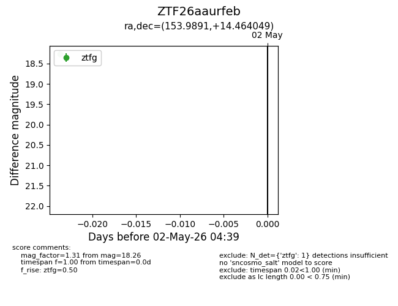
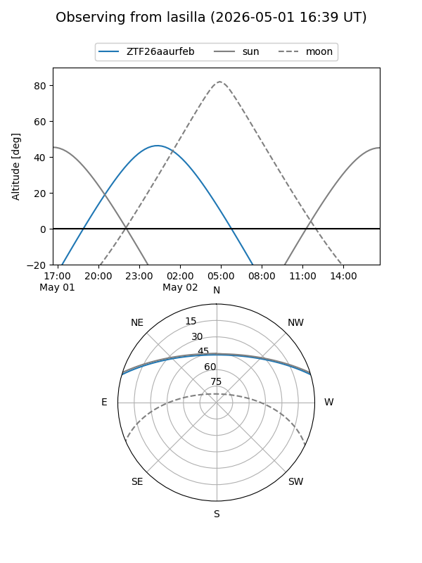
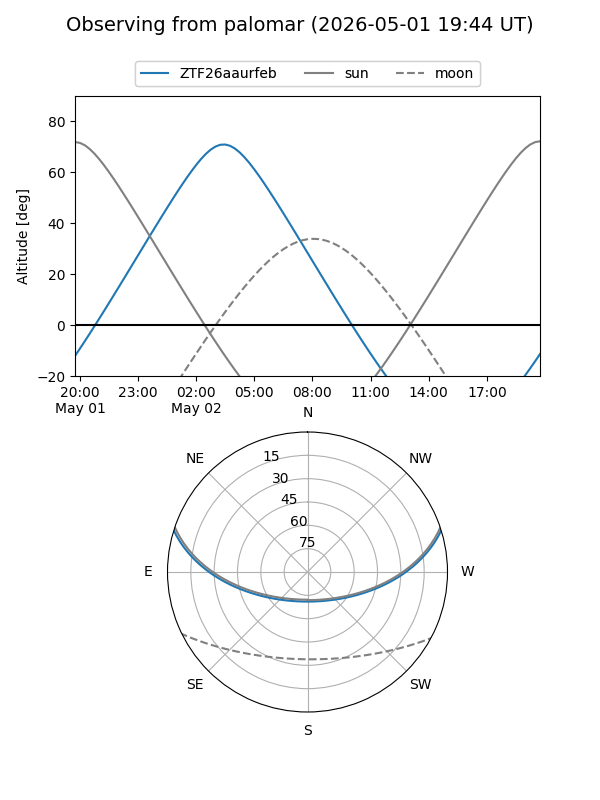

ZTF26aaurfeb
Target ZTF26aaurfeb at 2026-05-02 04:50
Aliases and brokers:
FINK: link
Lasair: link
ALeRCE: link
alt names
ZTF26aaurfeb (ztf,fink_ztf)
Coordinates:
equatorial (ra, dec) = 153.9891,+14.46405
equatorial (HMS+DMS) = 10:15:57.38,+14:27:50.58
galactic (l, b) = (224.2358,+51.70640)
Flags:
Photometry:
last ztfg=18.26
1 ztfg detections
Lightcurve

Visibility


Additional plots